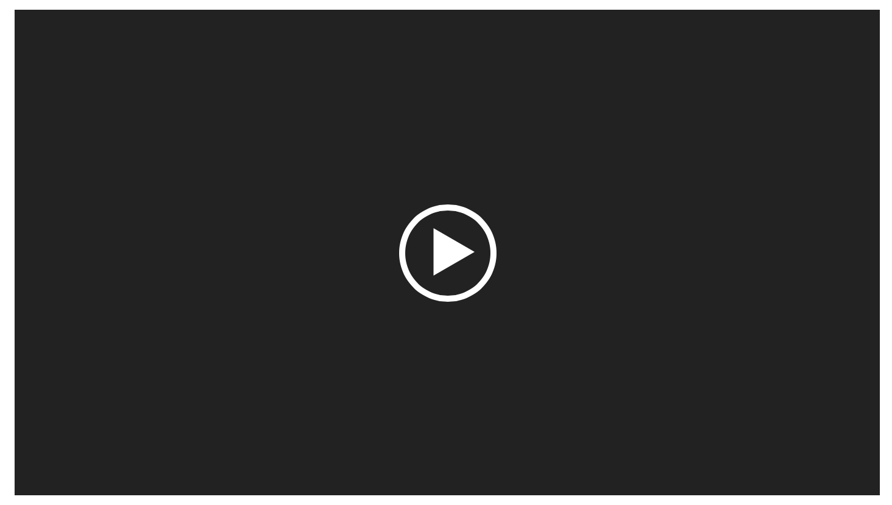
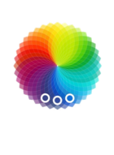

Design: Style a prototype
Using the design language from Task 11, redesign your paper prototype accordingly. The obtained results should have a high graphical fidelity and resemble the goal for your final design. These screens can best be designed using graphical software like the ones presented in Task .
Tools

Tips & tricks for styling your prototype
- Look for templates of common UI elements and patterns
- Find inspiration looking at other public projects designed with the tool of your choice
- Not every detail has to be completely covered - include short texts to explain why option is not yet available
Choosing colors
In web design, the used color scheme is a so-called "additive" one. This means that by combining multiple colors, the resulting color is determined by adding up the wavelengths. This is reflected in the RGB and hex values, which are some of the most commonly used color systems in front-end programming. "RGB" stands for "Red, Green, Blue", those are the colors represented in the pixels on your screen. Each value for the three colors ranges from "0,0,0" (black) to "255,255,255" (white). Sometimes you will see a fourth value, which determines the transparency of the color. The hex color code simply results from transforming the RGB value into a hexadecimal value.
Now, if you intend to pick amazing colors for your web app, it would be a good idea to visualize all colors systematically, e.g. in a color wheel, in order to make an educated decision about which colors to pick. The colors that you can typically see in a wheel like the one below will most likely just vary in their hue.
Here are some approaches to determine appealing color combinations for your visual design:
Monochrome
- Easy to find appealing color combination
- Try keeping the hue value as it is, increase saturation and decrease brightness.
- Example: Qatar Airways
Complementary
- Opposite colors elicit high contrast
- Elements pop out and can be identified easily
- Contrast needs to be used in a meaningful way
- Example: Panicstudio TV
Analogous
- Nearby colors have low contrast
- Good choice for banners and website backgrounds
- Example: Clear Todo App
Triadic
- Playful color scheme
- To keep balance, choose one dominant and two accent colors
- Example: Superman logo
{kind=link}
Final few tips: If you need inspiration, explore color schemes in images of the physical world or venture out yourself and figure out which colors typically seem to "go together" in your environment or the surroundings your web app will be used in! Also, never forget to check accessibility criteria, e.g. does your font size and color make the text on your app readable enough?
All you need to know about colors in UI Design by Christian Vizcarra, blog article
Color in UI Design: A (Practical) Framework by Erik Kennedy, blog article
Color Theory: Brief Guide For Designers by Tubik Studio, blog article
Color wheel by Adobe, website
Color calculator by sessionscollege, website
Color palettes by coolors, website
Document at least 3 example screens following the new style as images in iteration-3/design in the GitHub master branch.